Show other secondary papers
Accurate calculation of Wannier centers, position matrix, and composite operators using translationally equivariant and higher-order finite differences
Authors: Jae-Mo Lihm, Minsu Ghim, Seung-Ju Hong, Cheol-Hwan Park
Type: theory · Category: numerical methods · PDF: https://arxiv.org/pdf/2604.22614v1
Analysis basis: full PDF text, analyzed in chunks
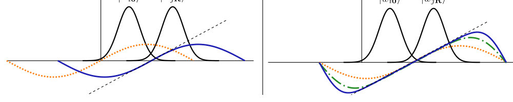
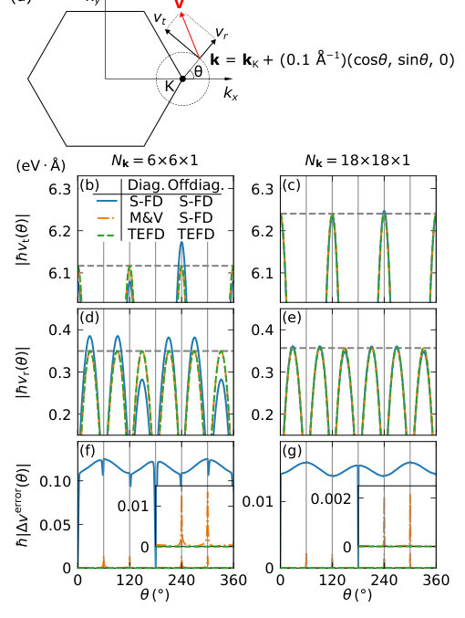
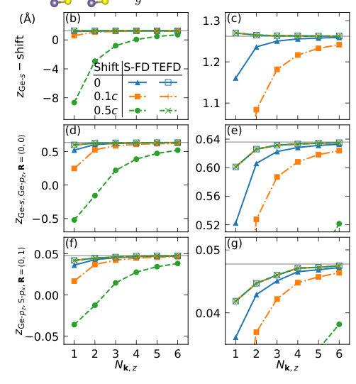
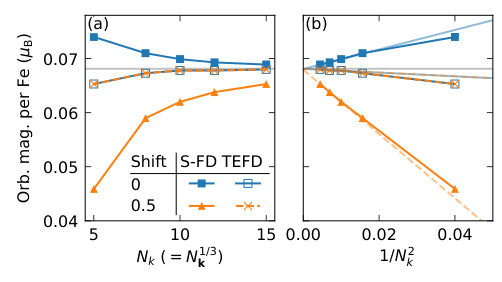
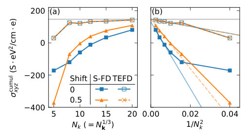
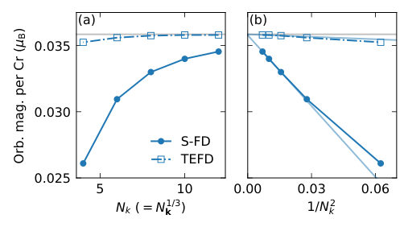
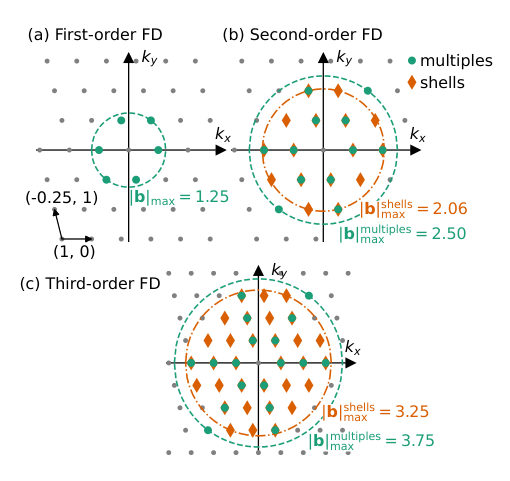
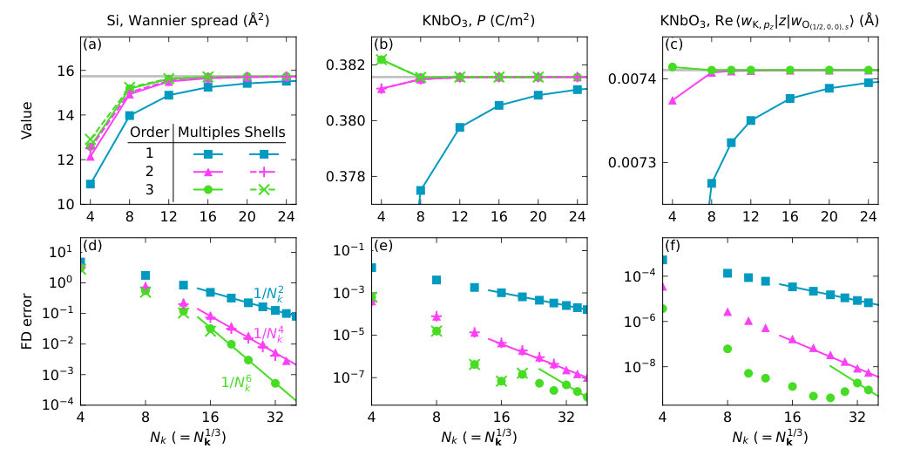
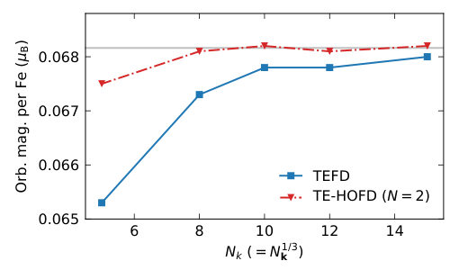
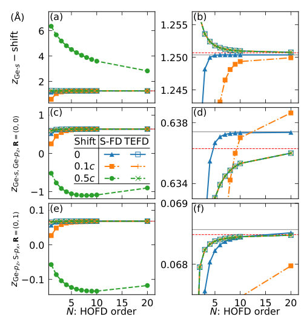
Main problem. Standard finite-difference approximations for position and composite operators in Wannier interpolation suffer from slow convergence, broken translational equivariance, and violations of crystal symmetries.
Main result. The authors developed a translationally equivariant finite-difference (TEFD) scheme and a higher-order (HOFD) approach that restore system symmetries, ensure size-consistency, and significantly accelerate convergence of $k$-space derivatives.
Method. The work introduces a midpoint-based TEFD scheme to ensure equivariance and a higher-order HOFD method using weighted $k$-point grids to improve error scaling from $O(b^{-2})$ to $O(b^{-2N})$.
Summary. This paper presents improved numerical algorithms for Wannier interpolation used in first-principles calculations. By introducing translationally equivariant and higher-order finite-difference schemes, the authors solve long-standing issues regarding symmetry-breaking errors and slow convergence in calculating quantum geometric properties. The new methods are implemented in widely used open-source packages like Wannier90 and WannierBerri, making them immediately accessible for more accurate electronic structure simulations.
Detailed structure
Model / system. The methods are applied to periodic electronic systems (solids) described by Bloch wavefunctions and Wannier functions, with specific test cases including graphene, GeS, bcc Fe, CrO2, and GaAs.
Key observables. Wannier centers and spreads, electric polarization, orbital magnetization, spin Hall conductivity, and interband velocity matrix elements.
Important parameters / regimes. k-point grid density, finite-difference order, and translation shift parameters.
Assumptions / limitations. The derivation assumes the localization of Wannier functions and, for certain symmetry proofs, assumes a simplified case where one Wannier function transforms into exactly one other.
Figures summary. Figure 1 compares S-FD vs. TEFD and HOFD schemes; Figure 2 shows Wannier center stability under shifts in GeS; Figure 4-6 demonstrate orbital magnetization and spin Hall conductivity convergence in Fe, CrO2, and GaAs; Figure 12-13 compare spin-velocity interpolation methods and convergence in GaAs.
Paper structure. The paper begins by identifying errors in standard finite-difference methods, then introduces the TEFD and HOFD schemes, provides mathematical proofs for symmetry and size-consistency, demonstrates application to composite operators, and concludes with numerical validation on various materials and implementation details in open-source codes.
Abstract
The momentum-space derivatives of Bloch wavefunctions are essential for studying quantum geometry and the equilibrium and response properties of solids. In practical first-principles calculations, these derivatives are obtained via Wannier interpolation of position and related composite matrices. These matrices are initially evaluated on a coarse k-point grid using finite-difference approximations and then interpolated to a dense grid. The accuracy of the finite-difference approximation directly impacts the convergence and reliability of the result. In this work, we present two key improvements to the finite-difference calculation of position and composite operators for Wannier interpolation. First, we formulate a translationally equivariant scheme that preserves the underlying symmetries of the system and significantly reduces finite-difference errors. Second, we introduce a higher-order finite-difference approach that yields a more accurate approximation of the k-space derivatives by systematically increasing the convergence rate. From a real-space perspective, these improvements correspond to better approximations of the position operator at the locations of the Wannier functions. We also present a generalization of the finite-difference scheme, which may reduce the number of finite-difference points while maintaining accuracy. We demonstrate the effectiveness of our methods by applying them to the calculation of Wannier centers and spreads, electric polarization, off-diagonal position matrix elements, orbital magnetization, and spin Hall conductivity. Our results demonstrate significant reductions in finite-difference errors, elimination of symmetry-violating errors, and improved convergence with respect to k-point sampling. These methods have been implemented in the open-source packages and can be readily adopted in other Wannier-based codes with minimal computational overhead.
Accurate Nanoscale Mapping of Electric Fields across Random Grain Boundaries in Polycrystalline Oxides Using Precession-Assisted 4D-STEM
Authors: Sangjun Kang, Hyeyoung Cho, Maximilian Töllner, Anna Rose Nelson, Ziming Ding, Xiaoke Mu, Di Wang, Wolfgang Rheinheimer, Kai Wang, Bai-Xiang Xu, Jakob Konstantin Laux, Mahmoud Serour, Karsten Albe, Andreas Klein, Christian Kübel
Type: both · Category: other · PDF: https://arxiv.org/pdf/2604.22398v1
Analysis basis: full PDF text, analyzed in chunks
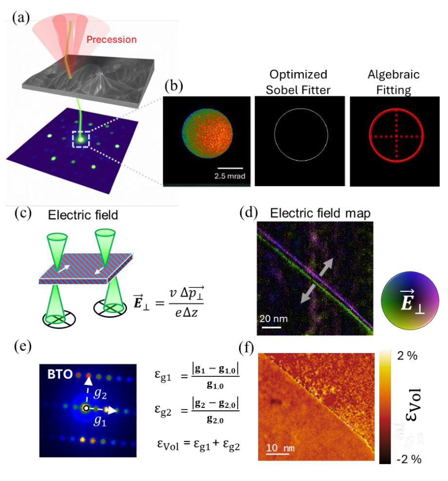
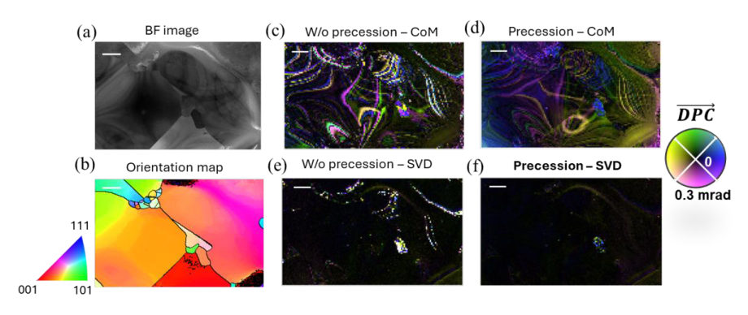

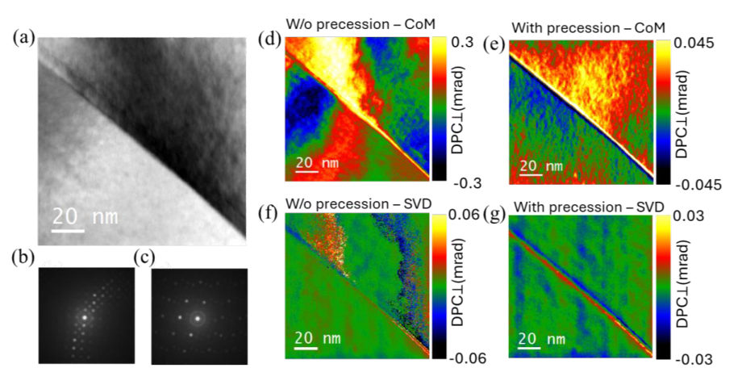
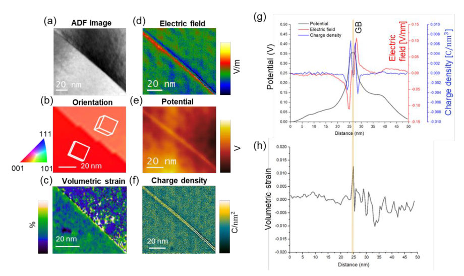

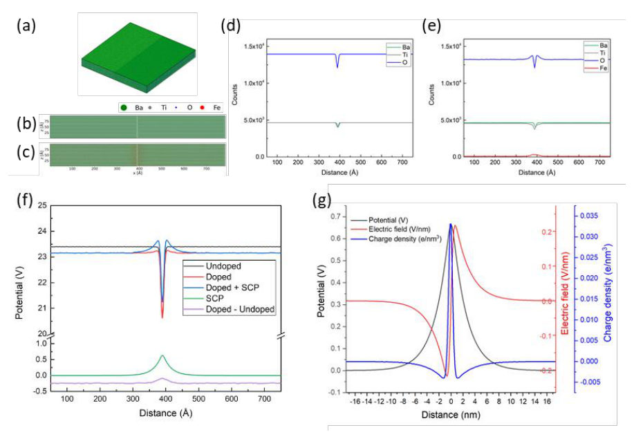

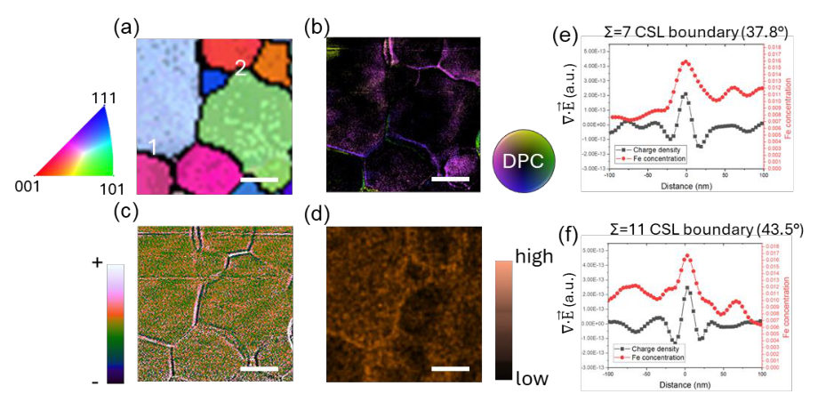
Main problem. The difficulty of accurately mapping nanoscale electric fields and charge distributions at random grain boundaries in polycrystalline oxides due to diffraction-induced artifacts and orientation-dependent contrast in conventional STEM-DPC analysis.
Main result. The combination of electron beam precession and SVD-based disk fitting significantly reduces crystallographic artifacts, enabling high-fidelity mapping of electric fields and charge density in complex polycrystalline structures.
Method. An experimental approach integrating electron beam precession with an advanced post-processing workflow using iterative Sobel filtering and Singular Value Decomposition (SVD) for ellipse fitting, complemented by atomistic MD simulations.
Summary. This paper presents a new 4D-STEM technique to overcome the limitations of conventional electron microscopy when measuring electric fields at grain boundaries. By combining electron beam precession with a specialized SVD-based mathematical fitting of diffraction disks, the researchers suppressed artifacts caused by crystal orientation and dynamical scattering. The method allows for the precise mapping of space charge layers and charge density in complex polycrystalline oxides like BaTiO3 and SrTiO3. This advancement enables a much clearer understanding of how chemical segregation and structural defects influence the local electrostatic environment in functional ceramics.
Detailed structure
Model / system. Polycrystalline oxides, specifically Fe-doped BaTiO3 and SrTiO3, featuring random grain boundaries and space charge layers; atomistic models include a BaTiO3 Sigma5 tilt boundary.
Key observables. Local electric fields, charge density distribution, electrostatic potential, local strain components, and elemental (Fe) concentration.
Important parameters / regimes. Nanoscale resolution, 300 kV accelerating voltage, 0.6 degree precession angle, and 5 to 5000 Angstrom scan step sizes.
Assumptions / limitations. The analysis assumes the electric field is the dominant DPC signal and that the mean inner potential (MIP) contribution from elemental segregation must be accounted for to avoid quantitative errors.
Figures summary. Figure 1 shows the workflow of precession and SVD fitting; Figure 2 compares DPC maps using CoM vs SVD methods; Figure 3 provides quantitative analysis of specific grain boundaries; Figure 6 correlates Fe-concentration with charge density.
Paper structure. The paper introduces the problem of diffraction artifacts, presents the new precession-assisted SVD method, compares its accuracy against conventional CoM methods, validates the approach using atomistic simulations, and demonstrates its application to mapping charge density in Fe-doped oxides.
Abstract
Space charge layers (SCLs) at grain boundaries play a crucial role in modulating local electric fields and influencing the functional properties of materials, such as oxygen vacancy migration and ionic conductivity in oxide ceramics. However, the direct experimental analysis of such localized electric fields and the corresponding charge distribution remains challenging. Conventional center-of-mass (CoM) analysis in scanning transmission electron microscopy differential phase contrast (STEM-DPC) is strongly affected by orientation-dependent contrast and dynamical scattering. Here, we demonstrate that combining electron beam precession with advanced post-processing, employing iterative edge detection via a Sobel filter and singular value decomposition (SVD), enables reliable and accurate, unbiased diffraction shift measurements with minimal crystallographic artefacts. The new method accurately refines the central disk position in nanobeam electron diffraction (NBED) patterns and thus significantly improves the extraction of the local electric field and corresponding charge distribution. Comparative analysis with conventional CoM methods shows superior accuracy and robustness for random grain boundaries in BaTiO3 and SrTiO3 as exemplary case studies. The experimental work is complemented by atomistic simulations to separate the electric field of the SCL from the mean inner potential difference of the grain boundary and the elemental segregation around the grain boundary. The in-depth analysis shows that our approach enables high-fidelity mapping of electromagnetic fields and their charge distribution in complex polycrystalline specimens, laying the groundwork for improved quantitative analysis using STEM-DPC.
Active Jurin's law
Authors: Birendra Mandal, Joydip Chaudhuri
Type: theory · Category: statistical mechanics · PDF: https://arxiv.org/pdf/2604.22231v1
Analysis basis: full PDF text, analyzed in chunks
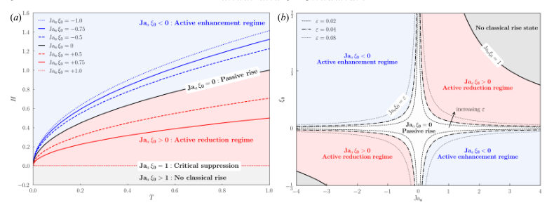
Main problem. The paper aims to extend the classical Jurin's law, which describes capillary rise in passive fluids, to active fluids that generate internal stresses through energy consumption.
Main result. The authors derive a generalized active Jurin's law, showing that active stresses can enhance, suppress, or even completely eliminate capillary rise, and that inertial effects can lead to activity-induced bistability.
Method. The study uses the continuum theory of active nematics and an extension of the Bosanquet formulation, employing linear stability analysis and effective potential analysis to examine dynamics.
Summary. This paper generalizes the classical physics of capillary rise to active fluids, which are materials that consume energy to generate internal stresses. By applying the theory of active nematics, the authors show that these internal stresses can either push the liquid higher or suppress the rise entirely. They provide a new dimensionless parameter, the active Jurin number, to quantify this effect. Furthermore, they demonstrate that while overdamped dynamics lead to a single stable height, the inclusion of inertia can create a system with two stable equilibrium heights. This work fundamentally changes how we understand transport and equilibrium in active matter.
Detailed structure
Model / system. An incompressible active nematic fluid (such as bacterial suspensions or actomyosin gels) rising in a vertical cylindrical capillary tube of radius a.
Key observables. Equilibrium rise height (H_infinity), rise velocity (h_dot), and effective surface tension.
Important parameters / regimes. Active Jurin number (Ja_a), interfacial alignment factor (xi_0), activity coefficient (zeta), and the distinction between extensile and contractile regimes.
Assumptions / limitations. The fluid is assumed to be incompressible and Newtonian (except for active stress); the gas pressure is uniform; and the linear-response model assumes weak dependence of order parameters on height and velocity.
Figures summary. Figure 1(a) shows predicted rise dynamics and scaling; Figure 1(b) presents a phase diagram in the (Ja_a, xi_0) plane delineating different rise regimes.
Paper structure. The paper introduces the problem of active capillary rise, derives a generalized Young-Laplace equation, establishes a dimensionless active Jurin's law, constructs a phase diagram for different activity regimes, and concludes with a stability analysis of the dynamics including inertial effects.
Abstract
Capillary rise is one of the classical problems in fluid mechanics and is traditionally described by Jurin's law, which balances capillary suction against hydrostatic pressure. Here we extend this classical result to active fluids, materials that generate internal stresses through microscopic energy consumption. Using the continuum theory of active nematics, we show that activity modifies the normal stress balance at the liquid-gas interface through an additional active normal stress contribution. This leads to a generalized active Jurin's law, which can be written in dimensionless form as \(H_{\infty} = 1 - \mathrm{Ja}_a ξ_0\), where \(H_{\infty}\) is the dimensionless active Jurin height at equilibrium, \(\mathrm{Ja}_a\) is an active Jurin number comparing active stress to capillary pressure, and \(ξ_0\) characterizes the alignment of active constituents at the meniscus. The theory predicts that extensile and contractile active fluids can either enhance or suppress capillary rise depending on the magnitude of activity and the interfacial alignment state. From this relation we construct a phase diagram in the \((\mathrm{Ja}_a,ξ_0)\) plane that delineates regimes of activity-enhanced rise, activity-suppressed rise, and complete suppression of the classical capillary state. When orientational order depends on confinement and flow, the coupling between activity and capillarity produces nonlinear equilibrium conditions that may admit multiple steady heights; linear stability analysis reveals that the overdamped dynamics selects a single stable state, whereas the inertial extension allows the possibility of activity-induced bistability. These results show that internally generated stresses fundamentally reshape one of the most classical capillary transport problems.
Alterations in Conformations of Poly(3-hexylthiophene) on Au(111) Induced by Annealing
Authors: Anmol Arya, François Vonau, Solomon L. Joseph, Thomas Pfohl, Silvia Siegenführ, Laurent Simon, Günter Reiter
Type: both · Category: other · PDF: https://arxiv.org/pdf/2604.22687v1
Analysis basis: full PDF text, analyzed in chunks
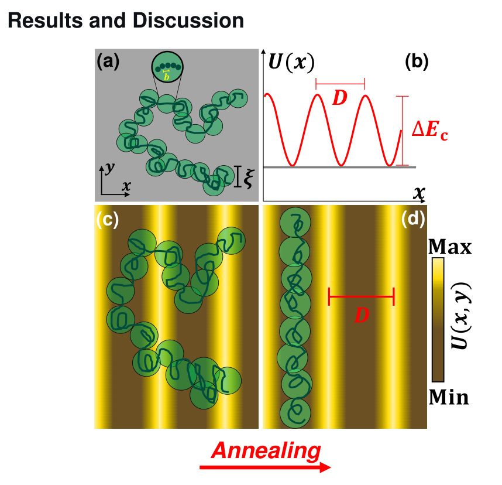
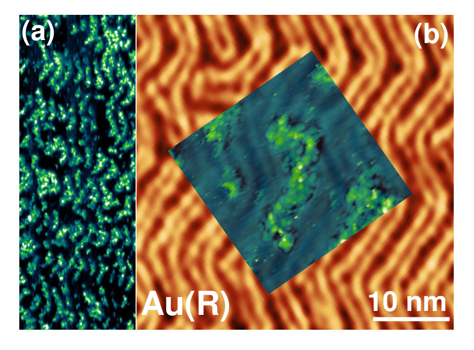
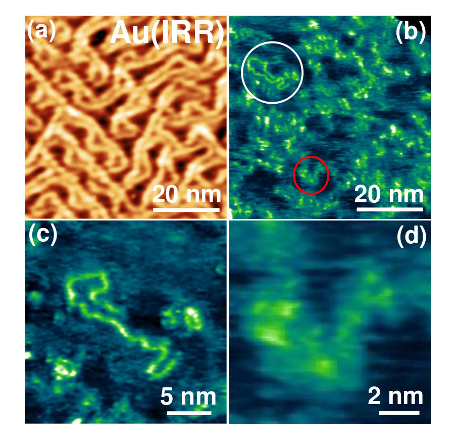
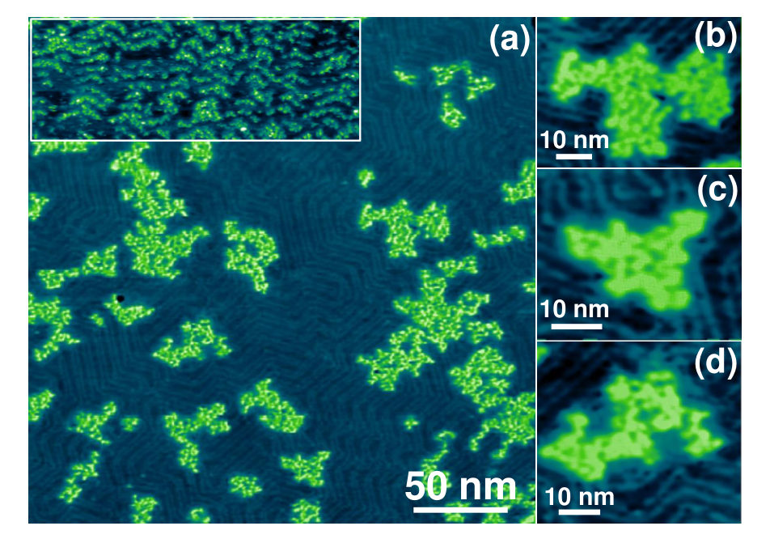
Main problem. Understanding how the conformation and self-organization of P3HT polymer chains on Au(111) are controlled by the interplay between substrate topography (periodic vs. irregular reconstruction) and thermal energy.
Main result. Annealing at 100 °C on regular Au(111) templates chains to follow the herringbone pattern, while 200 °C annealing induces large-scale chain clustering driven by pi-pi interactions; irregular surfaces instead lead to random-walk or collapsed states.
Method. High-vacuum electrospray deposition followed by variable-temperature Scanning Tunneling Microscopy (STM) and molecular modeling using Avogadro and LMAPper.
Summary. This paper investigates how the physical shape of polymer chains can be manipulated by controlling the underlying gold surface pattern and temperature. By using high-resolution STM, the authors show that a regular gold surface can act as a template to align polymers, whereas heat can be used to either move chains into surface valleys or force them to clump into large clusters. This provides a mechanistic way to design molecular-scale structures for organic electronics.
Detailed structure
Model / system. The system consists of regioregular poly(3-hexylthiophene) (P3HT) chains deposited on Au(111) single crystals featuring either periodic herringbone reconstruction or irregular surface states, modeled using the de Gennes 'adsorption blob' concept.
Key observables. Polymer conformations (random walk, coiled, collapsed, or corrugation-following), cluster area, cluster number density, and monomer-resolved dimensions.
Important parameters / regimes. Thermal energy (kBT), surface corrugation energy (Ec), corrugation width (D), and annealing temperature (100 °C and 200 °C).
Assumptions / limitations. The polymer is treated as a sequence of adsorption blobs where thermal energy dominates within a blob and substrate potential dominates at larger scales.
Figures summary. Figure 1 shows a schematic of polymer adsorption on flat vs. corrugated surfaces; Figure 2 shows P3HT alignment on regular Au(111); Figure 3 shows random-walk and collapsed states on irregular Au(111); Figure 4 shows large multi-chain clusters formed after 200 °C annealing.
Paper structure. The paper introduces the problem of polymer conformation control, describes the experimental setup (electrospray and STM), details the energy landscape of the Au(111) substrate, presents results for regular vs. irregular surfaces under different annealing temperatures, and concludes with design principles for polymer nanostructures.
Abstract
Employing high-vacuum electrospray deposition and scanning tunneling microscopy, we investigated how individual poly(3-hexylthiophene) (P3HT) chains navigated on the periodic energy landscape of a reconstructed Au(111) surface. The resulting polymer conformations were governed by the interplay between the periodically corrugated substrate, in particular the depth and regularity of the modulated surface potential, and thermal energy. On a regularly reconstructed surface, annealing at °C provided sufficient energy for chain segments to overcome energy barriers of the corrugated surface potential landscape, allowing monomers along the chain to experience a strong thermodynamic driving force toward the low-energy valleys on the surface. The adsorbed polymers adopted a state where the polymer conformations were replicating the herringbone pattern. By contrast, on an irregularly reconstructed surface, the correspondingly disordered potential landscape yielded a diverse mix of coiled polymer chains performing a two-dimensional random walk and collapsed chains located in troughs of the energy landscape. Intriguingly, annealing at °C forced polymers to form clusters of many chains. Our results establish that thermal energy and substrate topography represent control parameters for altering polymer conformations, providing a mechanistic framework for rationally designing polymer nanostructures at the molecular level.
Carrier scattering considerations and thermoelectric power factors of half-Heuslers
Authors: Rajeev Dutt, Bhawna Sahni, Yao Zhao, Yuji Go, Saff E Awal Akhtar, Ankit Kumar, Sumit Kukreti, Patrizio Graziosi, Zhen Li, Neophytos Neophytou
Type: theory · Category: other · PDF: https://arxiv.org/pdf/2604.22033v1
Analysis basis: full PDF text, analyzed in chunks
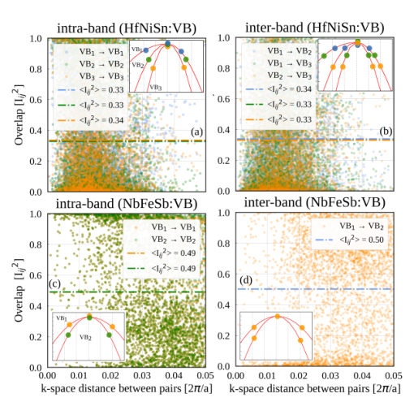
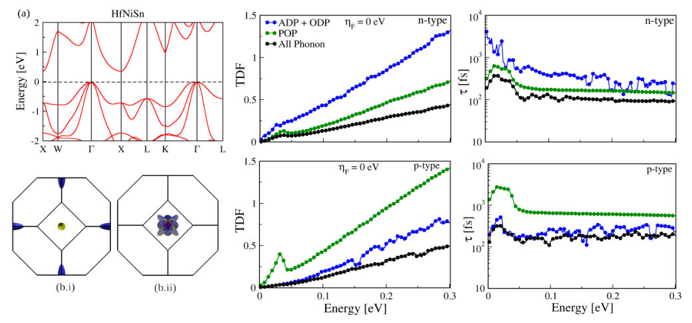
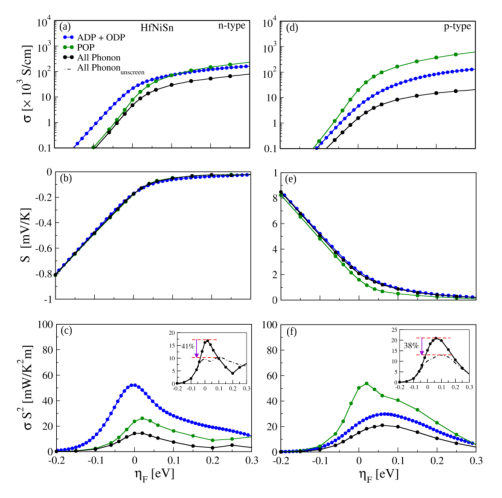
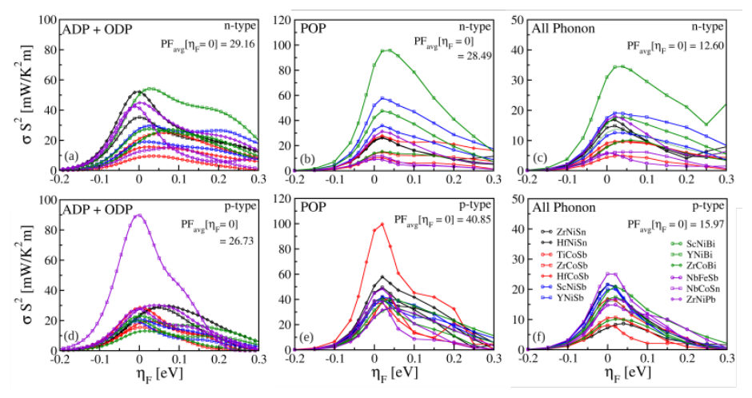
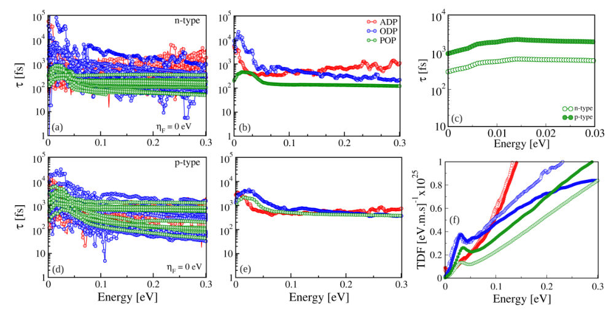
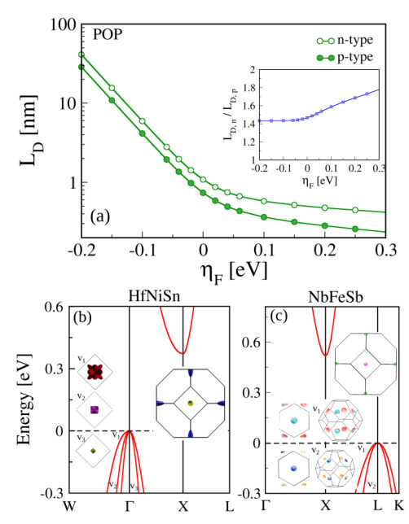
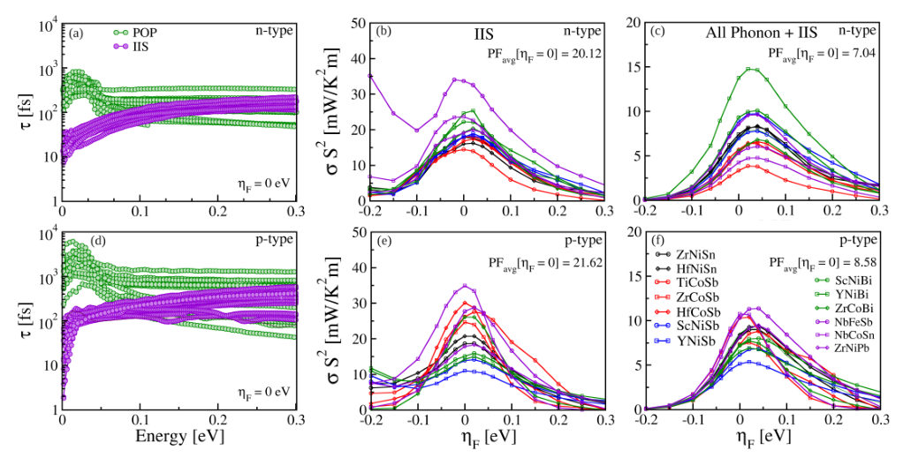
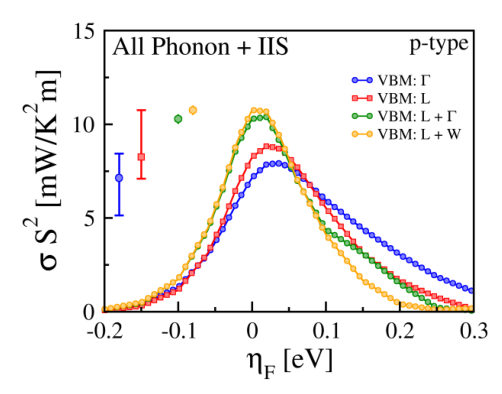
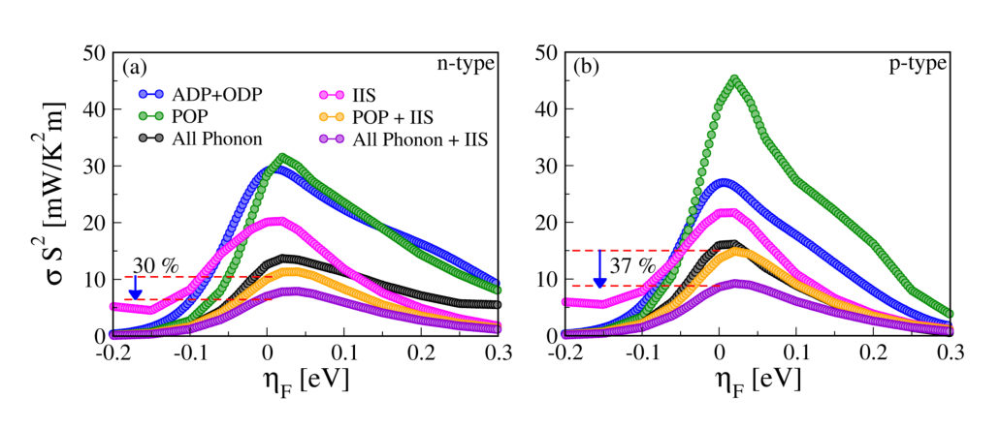
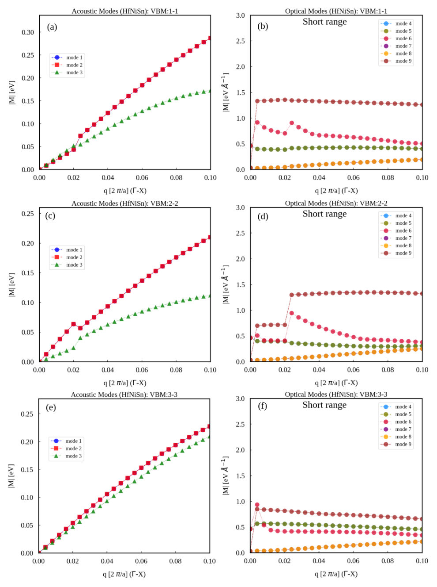
Main problem. The study aims to quantify the relative contributions of various electronic scattering mechanisms (Coulombic vs. non-polar phonon) to the thermoelectric power factor in half-Heusler alloys.
Main result. Coulombic scattering (IIS and POP) determines the thermoelectric power factor by approximately 65% on average, and including screening effects is critical for accurate predictions.
Method. The authors use Density Functional Theory (DFT) with the PBE-GGA functional and the Boltzmann Transport Equation (BTE) implemented via the ElecTra and EMAF codes.
Summary. This paper investigates how different types of carrier scattering, such as ionized impurity and polar optical phonon scattering, affect the thermoelectric performance of half-Heusler alloys. By analyzing 13 different materials, the authors demonstrate that Coulombic scattering processes are the dominant factors in determining the power factor. They also show that accounting for screening is essential for accurate transport modeling. The findings suggest that researchers can use simplified models focusing on these primary mechanisms to efficiently screen for new high-performance thermoelectric materials.
Detailed structure
Model / system. The study examines 13 n-type and p-type half-Heusler alloys with a cubic MgAgAs structure, focusing on the interplay between different scattering-limited transport regimes.
Key observables. Thermoelectric power factor (PF), electrical conductivity, Seebeck coefficient, relaxation time, and transport distribution function (TDF).
Important parameters / regimes. Temperature (300 K), valley degeneracy, effective masses (conductivity and DOS), deformation potentials, and screening length.
Assumptions / limitations. Calculations assume unipolar transport (ignoring bipolar effects) at room temperature and use a relaxation time approximation (RTA) with Matthiessen's rule.
Figures summary. Figures show band structures, Fermi surfaces, transport distribution functions under different scattering regimes, and comparisons of power factors across various scattering scenarios and material types.
Paper structure. The paper introduces the problem of scattering importance, describes the DFT and BTE methodology, presents a detailed case study of HfNiSn, generalizes findings across 13 alloys, and concludes with a computational strategy for efficient material screening.
Abstract
The electronic and thermoelectric (TE) transport properties of 13 n-type and p-type half-Heusler alloys are computationally examined using Boltzmann transport. The electronic scattering times resulting from all relevant phonon interactions and ionized impurity scattering (IIS) are fully accounted for using ab initio extracted parameters. We find that at room temperature the average peak TE power factors (PF) of all materials we examine reside between 5 and 10 mW/mK$^2$. We also find that IIS in combination with the long range polar optical phonon (POP) scattering are more influential in determining the electronic transport and PF over all other non-polar phonon interactions (acoustic and optical phonon transport). In fact, the combination of POP and IIS determines the thermoelectric power factor of the half-Heuslers examined on average by about 65\%. The results highlight the crucial impact of Coulombic scattering process (POP and IIS) on the TE properties of half-Heusler alloys and provide profound insight for understanding transport, which can be applied widely in other complex bandstructure materials. In terms of computation expense, the computationally cheaper POP and IIS provide an acceptable first-order estimate of the power factor of these materials, while the non-polar contributions, which require more expensive ab initio calculations, could be of secondary importance.
Comparative Silane Surface Functionalization Strategies for Enhanced Bloch Surface Wave Biosensing of Anti-SARS-CoV-2 Antibodies
Authors: Agostino Occhicone, Alberto Sinibaldi, Paola Di Matteo, Daniele Chiappetta, Riccardo Guadagnoli, Peter Munzert, Francesco Michelotti
Type: experiment · Category: other · PDF: https://arxiv.org/pdf/2604.22444v1
Analysis basis: full PDF text, analyzed in chunks
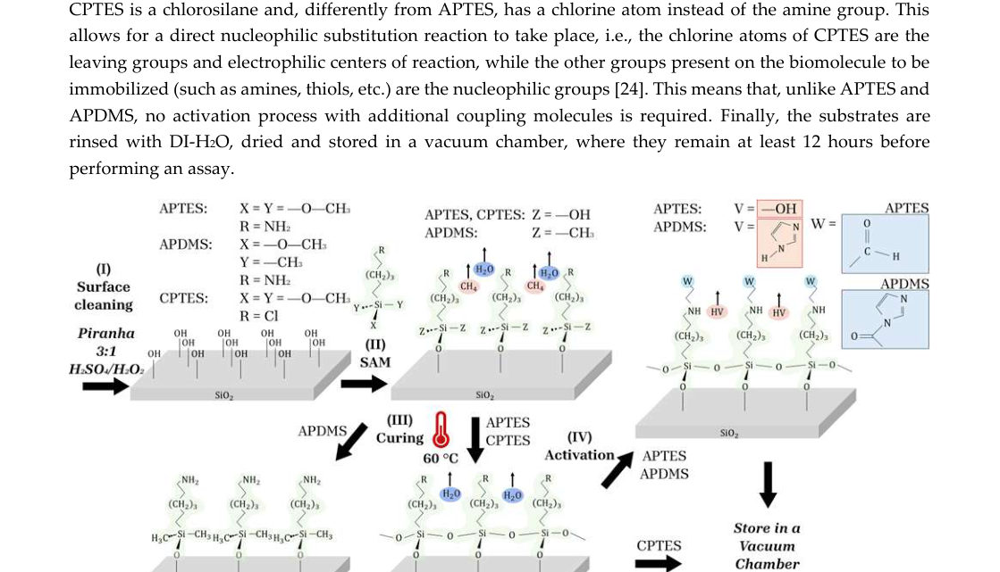
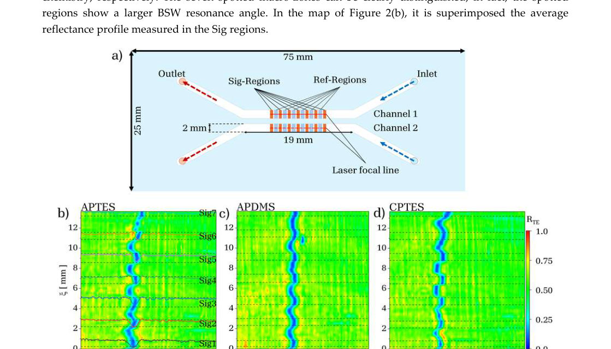
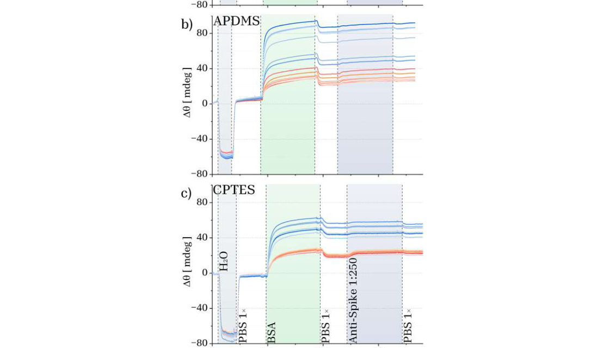
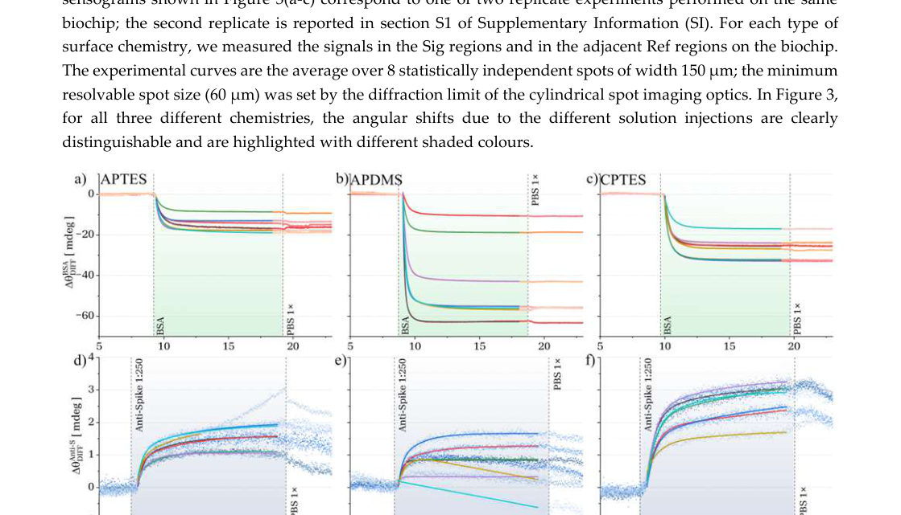
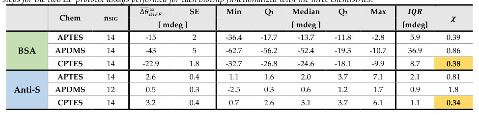
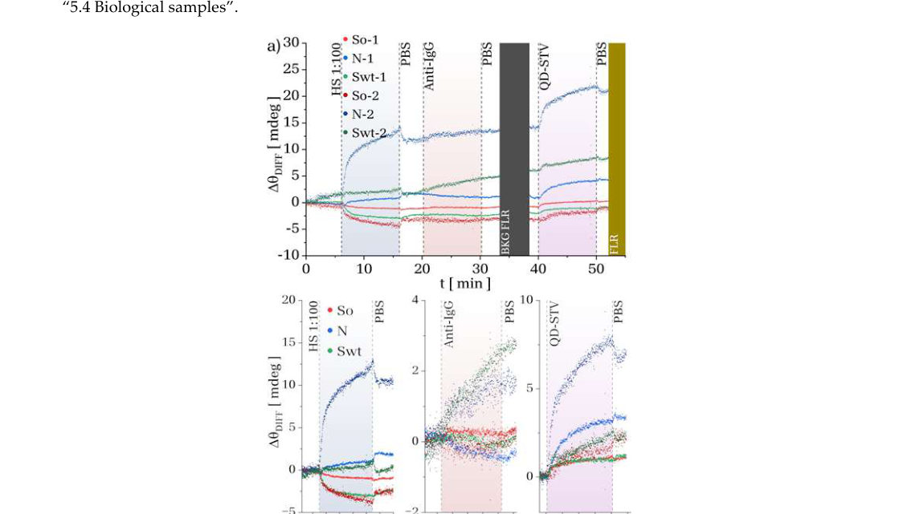
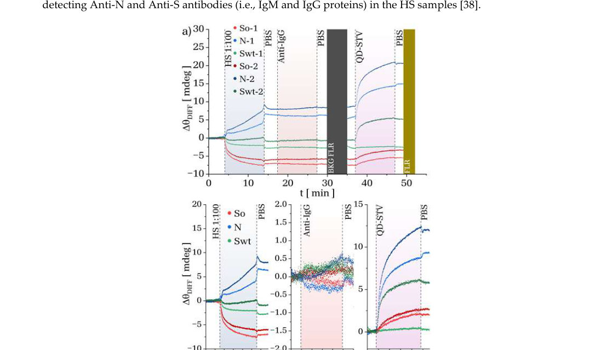
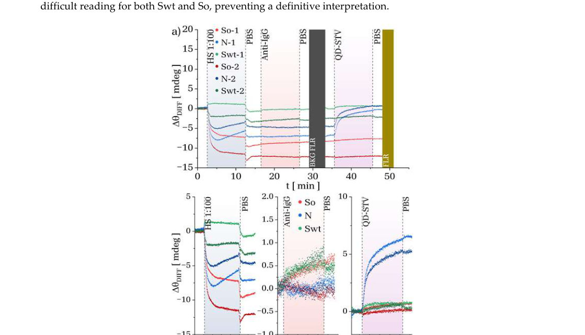
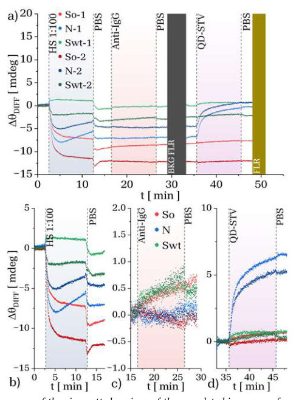
Main problem. Optimizing the surface functionalization of a Bloch Surface Wave (BSW) biosensor to improve the efficiency, stability, and specificity of anti-SARS-CoV-2 antibody detection.
Main result. CPTES was identified as the most robust and reproducible silanization chemistry, providing the best balance of specific signal, low non-specific adsorption, and reduced variability for both label-free and fluorescence-enhanced modes.
Method. A comparative study of three organosilane chemistries (APTES, APDMS, and CPTES) applied to a 1D photonic crystal, evaluated using label-free angular shift measurements and fluorescence-enhanced detection with quantum dots.
Summary. This paper compares three different silane-based surface functionalization strategies (APTES, APDMS, and CPTES) for a Bloch Surface Wave biosensor. The goal is to optimize the immobilization of SARS-CoV-2 spike proteins to detect antibodies more effectively. The researchers found that CPTES provides the most stable and specific signal with the lowest non-specific adsorption. The platform was successfully tested for rapid serological analysis using both label-free and fluorescence-enhanced methods in human serum.
Detailed structure
Model / system. A 1D photonic crystal (1DPC) transducer consisting of alternating layers of SiO2 and Ta2O5, terminated with TiO2 and SiO2, operating in a Kretschmann-Raether configuration to sustain Bloch Surface Waves.
Key observables. Angular shifts (delta theta), differential angular shifts (delta theta DIFF), fluorescence emission intensity, and a variability metric (chi).
Important parameters / regimes. Wavelengths of 670 nm (label-free) and 405 nm (fluorescence); penetration depths of 125 nm and 53 nm; flow rate of 1.37 uL/s.
Assumptions / limitations. The study assumes that the performance of the biosensor can be quantitatively assessed through standardized protein binding protocols and that the chemical stability of the silane layers is sufficient for clinical-style testing.
Figures summary. Figure 1 shows the silanization procedure and chemical structures; Figure 5 shows statistical boxplots and KDE curves; Figure 9 displays fluorescence maps and intensity plots; Figure 12 illustrates the optical readout system setup.
Paper structure. The paper begins with an introduction to surface functionalization in biosensing, followed by a detailed description of the 1DPC platform and the three silanization chemistries. It then presents the experimental protocols for label-free and fluorescence-enhanced modes, followed by a comparative analysis of the chemical performance, and concludes with the validation of the platform using human serum samples.
Abstract
Surface functionalization plays a decisive role in the performance of biosensors, as it governs the efficiency and stability of biomolecule immobilization at the sensor interface and, consequently, the overall performance of the biosensing platforms. In this work, we present a comparative study of three organosilane chemistries - APTES, APDMS, and CPTES - applied to a SiO2 terminated 1D photonic crystal able to sustain Bloch surface waves and designed to operate as optical biosensors in both label free and fluorescence enhanced modes. Each chemistry was evaluated through a standardized label-free protocol based on the interaction between immobilized SARS CoV 2 spike protein and its corresponding antibodies, enabling quantitative assessment of binding efficiency, nonspecific adsorption, and signal repeatability. CPTES exhibited the most favorable balance between specific signals, reduced variability, and low nonspecific adsorption. The three chemistries were subsequently tested in fluorescence mode for the detection of anti SARS CoV 2 IgG antibodies in human serum, demonstrating the suitability of BSW enhanced fluorescence for rapid serological analysis. Overall, the study identifies CPTES as the most robust and reproducible functionalization strategy among the three investigated for BSW biosensing and highlights the potential of the platform for fast, sensitive detection of clinically relevant antibodies.
Electric-Field Control of Quantum Tunneling Regimes in Focused He-Ion-Beam-Irradiated Oxide Interfaces
Authors: Yu Chen, Maria D'Antuono, Robin Hutt, Cesar Magen, Edward Goldobin, Dieter Koelle, Reinhold Kleiner, Marco Salluzzo, Daniela Stornaiuolo
Type: experiment · Category: other · PDF: https://arxiv.org/pdf/2604.22346v1
Analysis basis: full PDF text, analyzed in chunks
Main problem. The difficulty of fabricating planar tunnel field-effect transistors (TFETs) at buried oxide interfaces and the need for a method to create tunable, nanoscale potential barriers without degrading the 2D electron system.
Main result. He-FIB irradiation enables the creation of nanoscale potential barriers via localized lattice strain, allowing a single device to continuously tune between thermionic emission, direct tunneling, and Fowler-Nordheim tunneling via backgating.
Method. The researchers used Helium Focused Ion Beam (He-FIB) irradiation to pattern the LaAlO3/SrTiO3 interface, followed by high-resolution STEM for structural analysis and low-temperature transport measurements.
Summary. This paper demonstrates a new way to engineer nanoscale barriers in oxide interfaces using a Helium ion beam. By inducing local lattice strain, the researchers created tunnel field-effect transistors where the conduction mechanism can be switched between thermionic emission and different tunneling regimes using an electric field. This provides a powerful tool for creating tunable quantum nanodevices in complex oxide heterostructures.
Detailed structure
Model / system. The experimental platform consists of LaAlO3/SrTiO3 (LAO/STO) heterostructures hosting a two-dimensional electron system (2DES), where He-FIB-induced strain creates nanoscale potential barriers.
Key observables. Threshold voltage (Vth), barrier height (Phi_B), barrier width (d), in-plane lattice strain (epsilon_xx), and current-voltage (I-V) characteristics.
Important parameters / regimes. Transport regimes (thermionic emission, direct tunneling, Fowler-Nordheim tunneling), irradiation dose, and back-gate voltage (Vbg).
Assumptions / limitations. The analysis assumes the Richardson-Schottky model for thermionic emission and specific geometric profiles (trapezoidal/triangular) for tunneling regimes.
Figures summary. Fig 1 shows STEM images and strain maps of irradiated regions; Fig 2 displays device layout, I-V curves, and temporal evolution of Vth; Fig 3 shows gate-dependent I-V curves at 5K; Fig S1-S3 detail temporal stability and high-temperature transport analysis.
Paper structure. The paper introduces the fabrication challenge, describes the He-FIB method and structural characterization (STEM/strain), presents transport measurements across different tunneling regimes, discusses the tunability via backgating, and concludes with the temporal stability of the induced barriers.
Abstract
Helium focused ion beam irradiation enables the fabrication of tunnel field-effect transistors based on two-dimensional electron systems (2DESs) at an oxide interface.High resolution scanning transmission electron microscopy and strain mapping reveal localized lattice deformation confined to the irradiated regions, which act as nanoscale potential barriers. The barrier profile can be continuously tuned by electrostatic backgating at low temperature without degrading the electronic properties of the 2DES electrodes. Transport measurements demonstrate controlled access to thermionic emission, direct tunneling, and Fowler-Nordheim tunneling within a single device architecture. These results establish He FIB irradiation as a powerful tool for nanoscale functional engineering of complex-oxide interfaces and provide a platform for exploring gate-tunable quantum tunneling phenomena.
How Electrons Become Mobile in a Colossal Dielectric -- Fe$_2$TiO$_5$
Authors: M. L. McLanahan, A. P. Ramirez
Type: experiment · Category: disordered systems and neural networks · PDF: https://arxiv.org/pdf/2604.22017v1
Analysis basis: full PDF text, analyzed in chunks
Main problem. The study aims to determine whether the colossal dielectric permittivity in Fe2TiO5 is an intrinsic bulk phenomenon or an extrinsic effect caused by interfaces, and to identify the underlying mechanism for charge transport.
Main result. The researchers found that the energy barriers for both dielectric relaxation and DC transport are nearly identical (~288 meV), implying that the colossal dielectric response is an intrinsic bulk property driven by the same atom-level forces that govern electron mobility near a metal-insulator transition.
Method. Broadband dielectric spectroscopy (20 Hz - 1 MHz) and four-wire DC transport measurements were performed on single crystals across a temperature range of 5 K to 325 K, using complex impedance analysis and Cole-Cole modeling.
Summary. This paper investigates the origin of the massive dielectric constant in Fe2TiO5. By comparing the energy barriers for dielectric relaxation and DC electrical conduction, the authors demonstrate that both processes share the same activation energy. This suggests that the colossal dielectric effect is not an artifact of electrode interfaces but is an intrinsic property of the bulk material. The findings point to a system on the verge of a metal-insulator transition where localized dipole motion and mobile charge transport are governed by the same underlying physics.
Detailed structure
Model / system. The physical system is a single crystal of Fe2TiO5 with a pseudobrookite structure, characterized by intrinsic disorder due to random cation occupation and proximity to a metal-insulator transition. The transport mechanism is identified as Correlated Barrier Hopping (CBH).
Key observables. Complex dielectric constant (epsilon' and epsilon''), loss tangent (tan delta), AC conductivity (sigma_ac), complex impedance (Z*), and DC resistivity.
Important parameters / regimes. Activation energy (EA), relaxation time (tau), Jonscher exponent (s), and dielectric relaxation strength (delta epsilon).
Assumptions / limitations. The analysis assumes a Debye-like or Cole-Cole relaxation model and uses a constrained fitting approach to handle parameter correlation between the Jonscher exponent and the pre-exponential factor.
Figures summary. Figure 1 shows frequency/temperature dependence of dielectric properties and Arrhenius plots; Figure 2 presents complex permittivity and Nyquist plots; Figure 3 compares AC conductivity and activation energies; Figure 4 shows scaling to Jonscher's power law and temperature dependence of the exponent s.
Paper structure. The paper introduces the problem of colossal permittivity, describes the experimental setup and material, presents dielectric and impedance spectroscopy results, analyzes the conduction mechanism via Jonscher's law, and concludes by unifying the relaxation and transport mechanisms.
Abstract
We measure the colossal permittivity in single crystal Fe$_2$TiO$_5$ using broadband spectroscopy in the frequency range 20 Hz - 1 MHz. The relaxation response is analyzed using a Debye-like model with Arrhenius activation in two different ways and yields an energy barrier of 286.1 $\pm$ 2.8 meV. DC transport yields an activation energy of 288.8 $\pm$ 2.8 meV. These results strongly imply that the energy barrier for localized dipole motion and itinerant charge transport originate from the same atom-level forces. A further implication is that colossal dielectric behavior is a microscopic bulk phenomenon arising from a system on brink of metallicity.
Influence of Ni Doping on the Structural, Morphological, Optical, and Electrical Properties of Nanocrystalline Cd1-xMnxS Thin Films
Authors: Himanshu Sharma Pathok, Padma Pani Shahu, Himanshu Kalita, Prasanta Kumar Saikia
Type: experiment · Category: other · PDF: https://arxiv.org/pdf/2604.22561v1
Analysis basis: full PDF text, analyzed in chunks

Main problem. Investigating how Ni doping influences the structural, morphological, optical, and electrical properties of nanocrystalline Cd1-xMnxS thin films to optimize them for use as window layers in thin-film solar cells.
Main result. Ni doping increases crystallinity and electrical conductivity while decreasing the optical band gap and dislocation density, making the films suitable for optoelectronic applications.
Method. Chemical Bath Deposition (CBD) was used to synthesize the films, followed by XRD, HRTEM, FESEM, and UV-Vis spectroscopy for characterization, and four-probe measurements for electrical analysis.
Summary. This paper explores the effect of adding Nickel to CdMnS thin films prepared via a cost-effective chemical method. The researchers found that Ni doping improves the crystal quality and enhances electrical conductivity while tuning the band gap. These changes are significant because they suggest the material can be precisely engineered to serve as an efficient window layer for next-generation thin-film solar cells.
Detailed structure
Model / system. The physical system consists of Ni-doped Cd1-xMnxS (x=0.4) nanocrystalline thin films deposited on soda lime glass substrates.
Key observables. Crystallinity, microstrain, dislocation density, grain size, optical band gap, transmittance, electrical conductivity, and refractive index.
Important parameters / regimes. Ni doping concentration (1% to 4%), pH of the deposition bath (approximately 10.00), and film thickness (181.2-189.1 nm).
Assumptions / limitations. The Mn concentration is fixed at x=0.4 based on previous studies, and doping beyond 4% Ni is avoided to prevent secondary phase formation.
Figures summary. Figure 1 shows the preparation schematic; Figure 14 shows wavelength dependence of extinction coefficient and refractive index; Figure 15 shows dielectric and optical conductivity components; Figure 16 shows the dissipation factor.
Paper structure. The paper begins with the synthesis process, followed by structural and morphological characterization (XRD, TEM, SEM), then moves to optical property analysis (transmittance, band gap, dielectric constants), and concludes with electrical conductivity measurements and a discussion on solar cell applications.
Abstract
Ni-doped Cd1-xMnxS (x=0.4) thin films were prepared via a cost-effective chemical bath deposition (CBD) method to investigate their suitability for optoelectronic applications. Incorporation of a secondary transition metal such as Ni is expected to influence lattice strain, defect density, and electronic structure through ionic size effects and sp-d exchange interactions, thereby providing an additional degree of freedom for tuning the properties of Cd1-xMnxS-based ternary systems. X-ray diffraction (XRD) analysis confirmed the cubic zinc blende structure of the Cd1-xMnxS crystal, which was further corroborated by high-resolution transmission electron microscopy (HRTEM). Crystallinity increases where as microstrain and dislocation density found to be decreases as the doping concentration of Ni increases. Field emission scanning electron microscopy (FESEM) analysis revealed uniform, dense, and crack-free films with grain size increasing as a function of Ni content, and the FESEM cross-sectional images indicated a nearly constant thickness in the range of 181.2-189.1 nm. The films exhibited high optical transmittance (75-90%) in the visible and near-infrared (NIR) regions. The optical band gap decreases from 2.72 to 2.62 eV as the Ni concentration increases from 1% to 4%. Current-voltage (I-V) measurements revealed enhanced electrical conductivity, which further increased under illumination, confirming the photoconducting nature of the films. These results demonstrate that Ni doping effectively tunes the properties of Cd1-xMnxS thin films, highlighting their potential as efficient window layer materials for thin-film solar cells and related optoelectronic devices.
Mechanical Scaling Laws and Deformation Behavior of Nanoporous Tantalum Microparticles
Authors: J. I. Ramallo, N. Vázquez von Bibow, M. A. Monclús, I. McCue, M. C. Fuertes, C. J. Ruestes
Type: both · Category: other · PDF: https://arxiv.org/pdf/2604.22726v1
Analysis basis: full PDF text, analyzed in chunks
Main problem. Investigating whether the mechanical scaling laws established for electrochemically dealloyed nanoporous gold apply to nanoporous tantalum produced via liquid metal dealloying (LMD).
Main result. The stiffness and hardness of np-Ta follow Gibson-Ashby predictions due to enhanced ligament connectivity from the CuBi solvent, with plasticity driven by dislocation nucleation.
Method. Experimental nanoindentation and SEM/XRD characterization combined with Molecular Dynamics (MD) simulations using the LAMMPS code.
Summary. This paper examines the mechanical properties of nanoporous tantalum created through a liquid metal dealloying process. It finds that unlike nanoporous gold, these tantalum particles follow standard Gibson-Ashby scaling laws because the specific solvent chemistry leads to higher ligament connectivity. Molecular dynamics simulations confirm that the deformation is dominated by dislocation-driven plasticity rather than unusual mechanisms. This work demonstrates that solvent chemistry can be used as a tool to tune the structural topology and mechanical response of nanoporous metals.
Detailed structure
Model / system. Single-crystalline nanoporous tantalum (np-Ta) microparticles fabricated via liquid metal dealloying of a TiTa alloy in a molten CuBi bath.
Key observables. Elastic modulus (E), hardness (H), solid volume fraction (phi), and dislocation types.
Important parameters / regimes. Ligament diameter (~200 nm), solid volume fraction (~0.35), and indentation depth (1000 nm).
Assumptions / limitations. The solid volume fraction is estimated via a 2D SEM proxy, and Poisson's ratio is assumed to be 0.18.
Figures summary. Fig 1: SEM images and XRD patterns; Fig 2: Nanoindentation load-displacement and depth-dependent modulus; Fig 3: Hardness vs. modulus scatterplots; Fig 5: MD simulation of dislocation nucleation and strain distribution; Fig 6: Comparison of scaled modulus across different nanoporous metals.
Paper structure. Introduction of the scaling law problem, description of LMD fabrication and characterization, presentation of nanoindentation results and scaling analysis, MD simulation of deformation mechanisms, and comparison with other nanoporous metals.
Abstract
The mechanical scaling laws of dealloyed nanoporous metals depart from classical Gibson-Ashby predictions for open-cell foams due to a decreased connectivity in their solid network. However, these scaling relations have been established almost exclusively on nanoporous gold produced by electrochemical dealloying, and it is an outstanding question whether the relations apply to nanoporous networks fabricated by other dealloying methods. Here, we investigate the mechanical response of single-crystalline nanoporous tantalum (np-Ta) produced by liquid metal dealloying (LMD) a TiTa alloy in molten CuBi. Nanoindentation of individual microparticles yields an elastic modulus of 10-30 GPa and a hardness of 0.3-1.1 GPa, both scaling with the solid volume fraction in agreement with Gibson-Ashby predictions. This stiffness-density response of np-Ta departs from previous reports on nanoporous gold and is attributed to enhanced ligament connectivity enabled by the thermodynamics of the CuBi metal bath. Molecular dynamics simulations reveal dislocation-dominated plasticity during indentation of np-Ta, consistent with scanning electron microscopy observations of limited densification beneath the indents, ruling out unusual deformation mechanisms as an origin of the observed scaling. These findings identify solvent chemistry in LMD as a tunable lever for ligament connectivity, and thus for the mechanical response of nanoporous metals.
Micromorphic effects in an octet truss lattice
Authors: K. Goyal, R. S. Lakes
Type: both · Category: other · PDF: https://arxiv.org/pdf/2604.22544v1
Analysis basis: full PDF text, analyzed in chunks
Main problem. The study investigates the physical origin of elastic wave dispersion and cut-off frequencies in octet truss lattices and seeks a continuum-level theoretical representation for these phenomena.
Main result. The researchers demonstrate that the micromorphic elasticity theory successfully accounts for both longitudinal wave dispersion and cut-off frequencies, whereas Cosserat elasticity fails to predict the dispersion. They attribute the observed wave phenomena to the resonance of the lattice ribs.
Method. Experimental investigation via standing wave excitation, Resonant Ultrasound Spectroscopy (RUS), and wave transmission tests, compared against analytical predictions using micromorphic and Cosserat continuum models.
Summary. This paper explores how elastic waves behave in lattice structures like the octet truss. It finds that at high frequencies, the wave speed changes (dispersion) and eventually stops propagating entirely (cut-off) due to the resonance of the lattice ribs. The study proves that a 'micromorphic' continuum theory is necessary to accurately model these effects, as simpler models like Cosserat elasticity cannot account for the observed dispersion. This provides a more complete mathematical framework for designing advanced metamaterials.
Detailed structure
Model / system. The physical systems are Ti-5553 titanium alloy and polyamide polymer octet truss lattices. The theoretical models include classical elasticity, Cosserat (micropolar) elasticity, and micromorphic (microstructure) elasticity.
Key observables. Phase velocity (Vph), group velocity (Vg), cut-off frequencies (fc), and the normalized micromorphic effect (Lambda).
Important parameters / regimes. Angular frequency (omega), wave number (k), cell size, rib length, rib thickness, and the dimensionless parameter Lambda.
Assumptions / limitations. The calculation of cut-off frequencies assumes the ribs behave as simply supported bars; the analysis of the polymer lattice is noted as being complicated by potential viscoelasticity.
Figures summary. Figure 1 shows the relationship between frequency and wavenumber for phase and group velocity; Figure 2 plots dispersion for the titanium lattice; Figure 3 plots dispersion for the polymer lattice; Figure 4 illustrates the micro-deformation gradient and double stress in micromorphic theory.
Paper structure. The paper introduces the problem of wave dispersion in lattices, describes the experimental setup and materials, presents the observed dispersion and cut-off data, compares different continuum models (Classical, Cosserat, Micromorphic), and concludes with a theoretical interpretation of the results.
Abstract
Elastic wave dispersion is studied in an octet truss lattice and compared with a designed rib lattice known to exhibit strong Cosserat elastic effects. Dispersion entails variation of wave speed with frequency. The phenomenon is experimentally investigated by exciting standing waves in specimens of different length at discrete frequencies. At lower frequencies corresponding to long wavelengths, wave propagation is classically non-dispersive. As wavelength approaches a small multiple of the rib length, dispersion is observed. The material exhibited cut-off frequencies above which no signals were propagated. The physical origin of the dispersion and cut-off is resonance of the ribs. Interpreted as micromorphic continua, cellular solid behavior reveals elastic constants associated with flexibility of the unit cell in comparison with that of the overall material.
Pressure-Temperature Phase Diagram and $λ$-Transition in Liquid Sulfur
Authors: Sonia Salomoni, Frédéric Datchi, A. Marco Saitta, Arthur France-Lanord
Type: theory · Category: statistical mechanics · PDF: https://arxiv.org/pdf/2604.22696v1
Analysis basis: full PDF text, analyzed in chunks
Main problem. Understanding the atomistic mechanisms of the lambda-transition (temperature-induced polymerization) in liquid sulfur and reconstructing its pressure-temperature phase diagram.
Main result. The study identifies non-S8 rings as the reactive seeds for polymerization and demonstrates that at high pressures, polymerization and melting lines merge, with polymerization initiating within the crystal lattice.
Method. Large-scale molecular dynamics simulations driven by a local equivariant machine-learned interatomic potential (Allegro model) trained via active learning from DFT data.
Summary. This paper uses machine-learned molecular dynamics to provide a microscopic view of the polymerization transition in sulfur. It reveals that non-S8 rings act as the primary triggers for the formation of long polymer chains. Crucially, the study shows that at high pressures, the polymerization process begins within the solid crystal before melting occurs. The work successfully reconstructs the sulfur phase diagram, including the merging of the melting and polymerization lines at a critical point.
Detailed structure
Model / system. Elemental sulfur, specifically focusing on the transitions between crystalline alpha-S8, molecular liquid (S8 rings), and polymeric liquid (chains/rings) under varying temperature and pressure.
Key observables. Atomic coordination, ring size distribution (S8, S-pi, S-infinity), potential energy, heat capacity, volume, density, diffusivity, and viscosity.
Important parameters / regimes. Pressure up to 1.0 GPa, temperature range 300 K to 900 K, and various heating rates for temperature ramps.
Assumptions / limitations. The simulation assumes a fixed singlet multiplicity, which prevents the accurate description of isolated sulfur atoms; a coordination constraint was used to avoid non-physical single-atom fragments.
Figures summary. Figure 1 shows the visual evolution of S8 crystal heating and atom lineage; Figure 2 displays evolution of potential energy, volume, and ring content during temperature ramps; Figure 3 analyzes the 1.0 GPa trajectory showing lattice-conforming polymers.
Paper structure. The paper introduces the lambda-transition problem, describes the development and validation of the machine-learned potential, presents the reconstruction of the phase diagram, details the microscopic polymerization mechanism, and discusses high-pressure coupling and limitations.
Abstract
Using molecular dynamics simulations driven by a machine-learned interatomic potential, we investigate at low to intermediate pressures the $λ$-transition of sulfur, a temperature-induced polymerization. At ambient pressure, we capture the melting of crystalline cyclo-octasulfur into a liquid of molecular rings. Within this liquid, the concentration of non-S$_8$ rings increases with temperature; we show that these molecules act as reactive centers, which eventually trigger polymerization. We reproduce key experimental signatures of the $λ$-transition, including the sharp increase in heat capacity and the pronounced dependence of the transition temperature on the heating rate. Building on this, we reconstruct a phase diagram of polymerization up to intermediate pressures. Our results reveal a moderate decrease of the polymerization temperature with pressure, culminating with its merging with the melting line at a critical point. Beyond this point, we provide direct evidence of polymerization emerging from the crystalline phase. By analyzing temperature-ramp trajectories, we observe the formation of non-S$_8$ rings, open chains, and extended polymeric structures which retain features of the crystalline arrangement; further heating the system leads to disorder taking over through melting. Polymerization is therefore initiated slightly before melting. Altogether, our findings provide a microscopic picture of the $λ$-transition throughout the sulfur phase diagram.
Pulse Shaping to Mitigate the Impact of Device Imperfections in Field-Free Switching Using Combined Spin-Orbit and Spin-Transfer Torques
Authors: Kuldeep Ray, Jérémie Vigier, Sylvain Martin, Chloé Bouard, Nicolas Lefoulon, Marc Drouard, Gilles Gaudin
Type: both · Category: other · PDF: https://arxiv.org/pdf/2604.22574v1
Analysis basis: full PDF text, analyzed in chunks
Main problem. Achieving reliable, field-free switching in SOT-MRAM is hindered by device imperfections like interlayer coupling and reference layer instability, which cause backhopping and switching asymmetry.
Main result. The authors demonstrate that STT pulse shaping (using a decaying pulse) and two-step SOT pulses can significantly reduce the Write Error Rate (WER) and mitigate backhopping.
Method. The study combines experimental measurements of Write Error Rate (WER) in top-pinned MTJ devices with macrospin simulations using coupled Landau-Lifshitz-Gilbert (LLG) equations.
Summary. This paper addresses the reliability issues in SOT-MRAM, specifically the problem of backhopping and switching asymmetry in field-free operation. By using both experiments and macrospin simulations, the authors identify that device imperfections like interlayer coupling and reference layer instability are the primary culprits. They propose and experimentally demonstrate that engineering the shape of the STT and SOT voltage pulses can suppress these errors. This work provides a practical pathway toward more robust and deterministic magnetic memory devices.
Detailed structure
Model / system. A top-pinned Magnetic Tunnel Junction (MTJ) pillar consisting of a CoFeB free layer and a synthetic antiferromagnetic (SAF) reference layer, utilizing combined Spin-Orbit Torque (SOT) and Spin-Transfer Torque (STT) mechanisms.
Key observables. Write Error Rate (WER), switching asymmetry (AP-to-P vs. P-to-AP), and voltage thresholds.
Important parameters / regimes. SOT and STT pulse amplitudes, pulse duration, interlayer exchange coupling, reference layer magnetization tilt, and the 'loss-of-determinism' regime.
Assumptions / limitations. The simulations use a macrospin approximation rather than full micromagnetics to achieve statistical significance.
Figures summary. Fig 1 shows the MTJ stack and hysteresis loop; Fig 2 details the experimental setup and WER procedure; Fig 3 displays WER curves showing threshold asymmetry; Fig 4 shows device instability; Fig 5 illustrates the loss-of-determinism regime; Fig 6 and 7 demonstrate the effectiveness of modified pulse shapes in reducing WER.
Paper structure. The paper introduces the problem of field-free switching reliability, presents experimental evidence of asymmetry and backhopping, uses macrospin simulations to identify the underlying physical causes (RL tilt and coupling), proposes pulse-shaping mitigation strategies, and validates these strategies experimentally.
Abstract
Combining spin-orbit (SOT) and spin-transfer torques (STT) provides a practical approach for field-free switching in spin-orbit torque magnetic random-access memory (SOT-MRAM), a prerequisite for industrial deployment, but can compromise reliability through phenomena such as backhopping, especially in top-pinned stacks commonly used for SOT-MRAM. We investigate the write error rate (WER) of combined SOT + STT switching in top-pinned devices that are not optimized for STT switching. Experiments reveal clear indications of STT-induced backhopping and a pronounced field-free SOT switching asymmetry between AP-to-P and P-to-AP transitions. Our macrospin model, using two coupled Landau Lifshitz Gilbert equations for the free and the reference layers, qualitatively reproduces this asymmetry and reveals an intermediate loss-of-determinism regime in addition to the well-known backhopping region. Based on these simulations, we propose mitigation strategies and experimentally demonstrate that STT pulse shaping reduces WER and improves switching robustness in the presence of device imperfections.
Resonance Frequency Shift Measurements of SRF Cavities at DESY
Authors: Rezvan Ghanbari, Thorsten Buettner, Wolfgang Hillert, Karol Kasprzak, Tom Krokotsch, Ricardo Monroy-Villa, Detlef Reschke, Lea Steder, Alexey Sulimov, Hans Weise, Marc Wenskat, Mateusz Wiencek, Jonas Wolff
Type: experiment · Category: other · PDF: https://arxiv.org/pdf/2604.22596v1
Analysis basis: full PDF text, analyzed in chunks
Main problem. The paper addresses the need for precise measurement of resonance frequency shifts and quality factors in niobium SRF cavities, specifically mitigating systematic errors from mechanical stress and temperature gradients during the superconducting-to-normal transition.
Main result. The authors developed and validated a measurement setup and correction method that effectively removes frequency drifts caused by mechanical stress and reduces temperature gradient uncertainties, enabling reliable characterization of the anomalous frequency 'dip' and electron mean free path in mid-T heat-treated cavities.
Method. The study uses a dedicated frequency-shift measurement setup in vertical cryostats at DESY, employing Lorentzian fitting of S21 transmission spectra and an empirical frequency-drift correction method during a controlled non-adiabatic warm-up.
Summary. This paper describes the development of a high-precision measurement technique for studying the superconducting properties of niobium radio-frequency cavities. By implementing a system to correct for mechanical-stress-induced frequency drifts and thermal gradients, the researchers can accurately observe anomalous behaviors like the frequency 'dip' near the critical temperature. The work allows for the precise determination of the electron mean free path and oxygen concentration in the cavity surface layers. This is crucial for advancing the performance of SRF cavities used in particle accelerators.
Detailed structure
Model / system. The physical system consists of 1.3 GHz TESLA-type niobium superconducting radio-frequency (SRF) cavities, specifically comparing baseline cavities to those subjected to mid-temperature (300 C) heat treatments.
Key observables. Resonance frequency (f), loaded quality factor (QL), intrinsic quality factor (Q0), surface resistance (Rs), and penetration depth (lambda).
Important parameters / regimes. Critical temperature (Tc), electron mean free path (l), temperature gradients (grad T), and oxygen concentration (CO).
Assumptions / limitations. The analysis assumes the expression for the relationship between penetration depth and mean free path remains constant across different heat treatments, and that the temperature dependence in the superconducting region can be effectively handled by using a fixed temperature range.
Figures summary. Fig 1 shows the experimental setup; Fig 2-3 demonstrate the effectiveness of Lorentzian fitting for frequency extraction; Fig 4 shows monitored parameters during warm-up; Fig 5-6 illustrate the empirical drift correction process; Fig 7 compares tightened vs loosened mounting screws; Fig 8-9 show the impact of heat treatment and temperature gradients on frequency and quality factor curves.
Paper structure. The paper introduces the scientific problem of characterizing Nb cavity transitions, describes the experimental setup and the development of the frequency-shift measurement framework, details the mitigation of systematic errors (mechanical stress and thermal gradients), presents the results of mid-T heat treatment characterization, and concludes with the derivation of physical parameters like mean free path and oxygen concentration.
Abstract
The variation of the resonance frequency and intrinsic quality factor of superconducting radio-frequency cavities during the transition from the superconducting to the normal-conducting state provides essential insight into the fundamental superconducting properties of the cavity material. Investigating these transition dynamics is crucial for the continued advancement of niobium cavities whose near-surface regions are intentionally modified through the controlled introduction of interstitial atoms, such as oxygen and nitrogen, leading to the emergence of several novel behaviors whose underlying mechanisms are not yet fully understood. This work reports on the development and commissioning of a dedicated frequency-shift measurement setup. In its initial implementation, the system establishes a precise framework for determining the electron mean free path within both the superconducting penetration depth and the normal-conducting skin depth. It further enables investigation of an anomalous dip in the temperature dependence of the frequency shift near the critical temperature in cavities containing interstitial atoms in the near-surface lattice, a novel phenomenon previously reported in the literature. A recent upgrade, currently in the final stage of validation, significantly improves measurement accuracy and reproducibility. The improved setup enables comprehensive studies of the frequency shift and quality factor over the full temperature range above 7 K, contributing to a deeper understanding of the superconducting properties.
Spin-polarized Energy Density Method from Spin-Density Functional Theory
Authors: Yang Dan, Dallas R. Trinkle
Type: theory · Category: disordered systems and neural networks · PDF: https://arxiv.org/pdf/2604.22044v1
Analysis basis: full PDF text, analyzed in chunks
Main problem. Generalizing the Energy Density Method (EDM) to include spin polarization to decompose total energy into well-defined, spatially distributed atomic energies in magnetic systems.
Main result. The authors developed a spin-polarized EDM implemented in VASP that successfully partitions energy in magnetic systems, demonstrating high accuracy in predicting atomic energies for paramagnetic Fe using cluster expansions and deep neural networks.
Method. The method decomposes total energy into spin-polarized kinetic, Coulomb, exchange-correlation, and on-site energy densities, integrated over gauge-invariant Bader and charge-neutral volumes.
Summary. This paper introduces a new way to break down the total energy of a magnetic system into specific contributions from individual atoms using spin-density functional theory. By implementing this in the VASP code, the authors show it can be used to train machine learning models (like neural networks) to predict local magnetic energies. The method is demonstrated to be highly effective for studying complex magnetic environments, such as disordered iron and doped semiconductors, providing much more local detail than standard total energy calculations.
Detailed structure
Model / system. The study applies the method to paramagnetic face-centered cubic (fcc) Fe modeled via Special Quasirandom Structures (SQS) and Ni-doped GaN dilute magnetic semiconductors.
Key observables. Spin-polarized energy densities, atomic energies, magnetization density, and magnetic moments.
Important parameters / regimes. Lattice parameter a0 = 3.573 A, plane-wave cut-off of 550 eV, and exchange parameters (J) for the Landau-SCE model.
Assumptions / limitations. The formalism assumes collinearity of spins and neglects orbital magnetic moments and spin-orbit coupling.
Figures summary. Figure 1 shows RMS error for SQS sizes; Figure 2 shows histograms of atomic magnetic moments; Figure 3 shows RMSE plots for SCE and DNN models; Figure 6 shows spatial distribution of energy/magnetization in Ni-doped GaN; Figure 7 shows energy distributions for Ni-Ni configurations.
Paper structure. The paper introduces the spin-polarized EDM formalism, details its numerical implementation in VASP, presents an application to paramagnetic Fe using machine learning (SCE and DNN), and concludes with an application to Ni-doped GaN to study localized exchange interactions.
Abstract
The energy density method is generalized to include spin polarization with the full formalism derived based on spin-density functional theory, which aims at decomposing the total energy into well-defined atomic energies. The method involves two steps: (1) decomposing the total energy into spin-polarized energy density functions in real space, and (2) integrating these energy densities over chosen gauge-invariant volumes for uniquely defined atomic energies, whose summation over all the atoms restores the DFT total energy up to a constant difference. This method is numerically implemented into the Vienna ab initio simulation package for the projector augmented-wave method, and is showcased with two applications. In the first application, we model the paramagnetic face-centered cubic Fe using spin special quasirandom structures; the spin energies are fit to spin cluster expansions and a deep neural network. In the second application, we calculate the atomic energy distributions of dilute magnetic semiconductor Ni-doped GaN with different dopant distances and spin configurations. This method extracts additional useful information for the study of magnetic systems with density functional theory.
Strain engineering of Andreev spin qubits in Germanium
Authors: Vittorio Coppini, Patrick Del Vecchio, Antonio L. R. Manesco, Anton Akhmerov, Valla Fatemi, Bernard van Heck, Stefano Bosco
Type: theory · Category: quantum information and computing · PDF: https://arxiv.org/pdf/2604.22650v1
Analysis basis: full PDF text, analyzed in chunks

Main problem. Recent experiments failed to resolve the spin-splitting of Andreev bound states in germanium Josephson junctions, which is a prerequisite for controlling Andreev spin qubits.
Main result. The authors identify compressive strain as the cause of suppressed spin-splitting and propose that using unstrained or tensile-strained (GeSn) heterostructures can increase spin-splitting by over two orders of magnitude, enabling fast all-electric quantum gates.
Method. The study uses a 6-band Luttinger-Kohn and Bir-Pikus Hamiltonian reduced to an effective 14x14 and 2x2 model via Schrieffer-Wolff transformations, combined with numerical simulations of ballistic Josephson junctions using the Kwant software package.
Summary. This paper addresses the difficulty of implementing Andreev spin qubits in germanium due to suppressed spin-splitting caused by compressive strain. By proposing alternative heterostructures, such as unstrained Ge or tensile-strained GeSn, the authors demonstrate that spin-splitting can be enhanced by two orders of magnitude into the GHz range. The study also predicts that these systems allow for fast, all-electric quantum gate operations in approximately 100 nanoseconds. Ultimately, the work establishes strain engineering as a vital design principle for future germanium-based quantum computing architectures.
Detailed structure
Model / system. The system consists of planar germanium (Ge) heterostructure Josephson junctions, specifically comparing compressively strained Ge/SiGe, unstrained Ge, and tensile-strained Ge/GeSn architectures.
Key observables. Andreev level energy splitting (delta E), Fermi velocity difference (delta v), Rabi frequency (Omega_01), and coherence length (xi).
Important parameters / regimes. Strain levels (Si or Sn concentration), junction geometry (length L_N and width W), chemical potential (mu), and superconducting phase difference (phi).
Assumptions / limitations. Assumes homogeneous strain from lattice mismatch, s-wave superconductivity induced from aluminum leads, and ballistic transport in the junctions.
Figures summary. Figure 1 shows junction geometry and how strain affects band dispersion and Andreev levels; Figure 2 shows dependence of Andreev levels on chemical potential and geometry; Figure 3 illustrates spin-splitting in tensile-strained Ge/GeSn; Figure 4 shows Rabi frequency for the qubit transition.
Paper structure. The paper begins by identifying the problem of suppressed spin-splitting, introduces the strain-dependent Hamiltonian and effective models, presents numerical simulations of different strain regimes (compressive, unstrained, tensile), evaluates qubit control via electric-dipole-spin-resonance, and concludes with design principles for Andreev spin qubits.
Why it may be interesting. This paper is relevant for researchers in quantum information as it provides a concrete material engineering strategy (strain engineering) to realize a new class of controllable spin qubits (Andreev spin qubits) using semiconductor heterostructures.
Abstract
Planar germanium heterostructures are promising hosts for hybrid quantum devices due to their compatibility with superconductors, low material disorder, and relaxed fabrication constraints. Also, the potentially low density of nuclear spins and strong spin-orbit interaction make germanium attractive for coherent spin physics. However, recent microwave spectroscopy experiments were unable to resolve a spin-splitting of bound states in germanium Josephson junctions, the prerequisite for defining and controlling Andreev spin qubits. Here, we argue that compressive strain is the key mechanism suppressing spin splitting in current devices. Furthermore, we propose unstrained and tensile-strained heterostructures, fully compatible with state-of-the-art growth technology, that significantly enhance the relevant spin-orbit effect. By numerically simulating ballistic Josephson junctions, we predict spin splittings comfortably in the GHz range, more than 2 orders of magnitude larger than compressively strained cases, and all-electric quantum gates in a hundred nanoseconds. Our results establish strain engineering as a key design principle for realizing Andreev spin qubits in germanium-based devices.
Surface coating induced lubrication in flowing granular materials
Authors: Sayali V. Chaudhary, Ashish V. Orpe
Type: both · Category: statistical mechanics · PDF: https://arxiv.org/pdf/2604.22396v1
Analysis basis: full PDF text, analyzed in chunks
Main problem. Understanding the particle-level dynamics and mechanisms behind how surface coating by small lubricant particles alters the flow properties of bulk granular materials.
Main result. The flow rate exhibits a non-monotonic dependence on lubricant content, increasing due to reduced inter-particle friction and decreasing at higher concentrations due to enhanced densification and damping.
Method. Discrete Element Method (DEM) simulations using LIGGGHTS software, calibrated against previous experimental data.
Summary. This paper investigates how adding small lubricant particles to a granular flow creates a surface coating that changes flow dynamics. Using DEM simulations, the authors show that while low amounts of lubricant reduce friction and speed up the flow, excessive amounts lead to crowding and slower flow. The study provides a microscopic look at how particle contacts and surface coverage drive these macroscopic changes, bridging the gap between previous experimental observations and computational insights.
Detailed structure
Model / system. A mixture of large spherical bulk particles and small spherical lubricant particles flowing down a 24-degree inclined plane, with cohesive interactions modeled via the SJKR framework.
Key observables. Overall flow rate, velocity profiles, packing fractions, granular temperature (RMS velocity), and surface coverage.
Important parameters / regimes. Number ratio of lubricant to bulk particles (Nr), particle size ratio, chute inclination, and cohesion energy density.
Assumptions / limitations. Lubricant particles are approximated as spheres rather than plate-like shapes, and periodic boundary conditions are used which may prevent the study of wall-induced segregation.
Figures summary. Schematic of the simulation setup; comparison of simulation and experimental velocity profiles; side-view images showing layer expansion and contraction; plots of surface coverage, contact types, and coordination numbers vs. lubricant content.
Paper structure. Introduction of the lubrication problem, description of the DEM simulation setup and contact models, presentation of flow rate and layer thickness results, analysis of particle-level contact networks and surface coverage, and comparison between cohesive and non-cohesive regimes.
Abstract
We investigate the flow of spherical, bulk granular particles down an inclined plane mixed with small-sized spherical lubricant particles using discrete element method simulations. Predefined cohesive interaction is implemented between lubricant and bulk particles, enabling the coating of the former over the latter. The overall flow rate exhibits non-monotonic dependence on lubricant content. Initially, it increases with lubricant addition, reaches a maximum at an intermediate lubricant content, and decreases for even higher lubricant content. The increase in the flow rate is attributed to a lower inter-particle friction coefficient between lubricant-coated bulk particles. The decrease in the flow rate at higher lubricant content, on the other hand, is attributed to enhanced densification and increased damping between crowded particles. Both these occurrences are examined using various flow level characteristics. The simulation results are found to be in qualitative agreement with previous experimental results. Overall, the outcome integrates novel computational insights and prior experimental results to enhance the understanding of the powder lubrication phenomena.
The influence of implantation conditions on dopant activation in Al-implanted 4H-SiC: A MD study applying an Al potential fitted to DFT barriers
Authors: Sabine Leroch, Robert Stella, Andreas Hössinger, Lado Filipovic
Type: theory · Category: other · PDF: https://arxiv.org/pdf/2604.22434v1
Analysis basis: full PDF text, analyzed in chunks
Main problem. Understanding how implantation temperature and dose influence defect evolution, amorphization, and Aluminum (Al) dopant activation in 4H-SiC.
Main result. The study identifies a kinetic processing window (500-900 K) where moderate disorder facilitates Al activation via vacancy-assisted substitution during regrowth, whereas higher temperatures promote stable interstitial clusters and planar defects that reduce activation.
Method. Large-scale Molecular Dynamics (MD) simulations using a combined Gao-Weber and reparameterized Morse potential, validated by Density Functional Theory (DFT) and Nudged Elastic Band (NEB) calculations.
Summary. This paper uses molecular dynamics to investigate the atomistic mechanisms of Aluminum doping in 4H-SiC. It reveals that while higher implantation temperatures reduce initial crystal damage, they paradoxically lead to lower dopant activation at high doses by promoting stable interstitial clusters. The authors propose a specific temperature window for implantation that optimizes activation through controlled nanoscale amorphization and subsequent regrowth. The study also identifies new Al diffusion paths and a carbon-antisite kick-out mechanism.
Detailed structure
Model / system. Aluminum-implanted 4H-SiC (a wide bandgap semiconductor) undergoing ion implantation and high-temperature annealing.
Key observables. Frenkel pair production, Al substitutional incorporation (activation), defect cluster size, disorder fraction, and formation of planar defects (Frank loops).
Important parameters / regimes. Implantation temperature (500 K vs 900 K), Al dose (up to 10^21 cm^-3), and annealing temperature (up to 2350 K).
Assumptions / limitations. MD-accessible annealing times are limited to 100 ns, which may not capture long-term experimental equilibrium; explicit charge states and compensation effects are not treated.
Figures summary. Figures show CI-NEB reaction paths, Al diffusion pathways, defect morphologies (clusters and loops) after annealing, and depth-resolved defect concentrations.
Paper structure. The paper introduces the problem of Al activation, describes the MD/DFT methodology and potential development, presents results on the implantation phase (damage/amorphization), details the annealing phase (defect evolution/clustering), and concludes with the identification of the kinetic processing window.
Abstract
We present molecular dynamics simulations of shallow Al implantation in 4H-SiC to clarify how implantation temperature and dose control defect evolution and dopant activation during early annealing. Using the Gao-Weber potential together with a reparameterized Morse Al-SiC interaction fitted to DFT migration and kick-in/out barriers, we find that higher implantation temperature reduces Frenkel-pair production and suppresses extended amorphous pockets. Yet at high doses (>1e20 cm^-3), annealing shows non-monotonic behavior: samples implanted at 900 K form larger, more stable interstitial clusters than those implanted at 500 K. These clusters trap Al and lower substitutional incorporation. Within MD-accessible times, the fraction of lattice-site Al is therefore higher after 500 K implantation despite better as-implanted crystallinity at 900 K. After annealing, two regimes emerge around the Al solubility limit: a low-dose regime dominated by isolated point defects and small complexes, and a high-dose regime with clustering and planar-defect formation that is strongly temperature dependent. The results explain the experimentally observed activation window (500-900 K) and indicate a kinetic route in which controlled nanoscale amorphization improves activation through regrowth-assisted incorporation while limiting extended defects. We also identify a new Al diffusion path and a carbon-antisite kick-out activation mechanism, both confirmed by DFT-NEB.
← Index · ← Previous · Next →